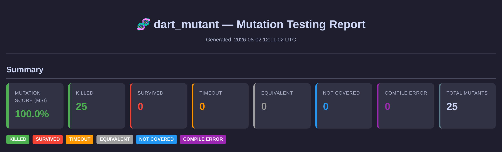

Injects deliberate faults into your Dart code and runs your tests against each one. Survivors are gaps coverage can't see.

Auto-detects platform, downloads a static binary, installs to ~/.local/bin.
curl -fsSL https://raw.githubusercontent.com/SulthanZahran1/dart-mutant/main/scripts/install.sh | bash
Other channels:
brew install SulthanZahran1/tap/dart_mutantflutter testA line can be 100% covered and still hold a bug your tests would never catch. Mutation testing finds the assertions that actually do work.
10 generic, plus 7 that only exist for Dart. Restrict with --operators or .dart_mutant.yml.
?? fallbacks! assertions?. to ... to .awaitThe constructs that make Dart unique, and that generic tools miss.
cd my-dart-project dart_mutant # auto-detect, run everything dart_mutant --threshold 80 # CI gate: exit 0 if MSI ≥ 80 dart_mutant --format json --quiet # pure JSON for agents dart_mutant --detect-equivalent # TCE equivalent detection dart_mutant --mutant 42 # re-run one mutant
--path · project root, defaults to current dir--parallel · worker count, defaults to CPU cores--format · console, json, html, junit--sample N · quick feedback on a subset--incremental --base-ref main · only changed files--exclude "*.g.dart,*.freezed.dart" · skip generatedEvery mutant is classified, and each status points to a concrete next step.
Tests caught the mutation. Nothing to do.
Tests missed it. Write a test that fails under the mutation.
Mutation caused a hang. Add boundary-input tests for loops.
Bytecode-identical, unkillable. Excluded from the score.
No test reaches the line. Add coverage first.
Invalid Dart produced. Should stay under 2%.
Self-contained dark-theme heatmap with per-file MSI.
mutation-testing-elements schema v2. Dashboard-ready.
Drop into any CI test dashboard.
MSI, killed, survived, timeout at a glance.
MIT licensed, single binary, zero services. The report in the hero is a real run against a real Dart fixture.